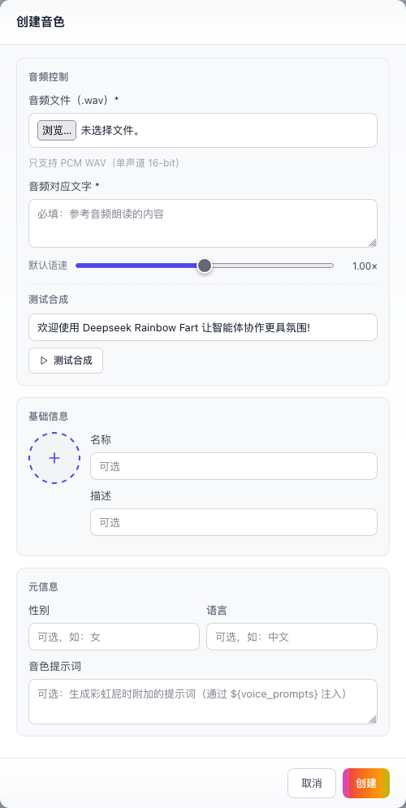

DeepSeek Harness Plugin · Guide
每次和 AI 对话，为你播放一句专属的夸赞语音。
DeepSeek Rainbow Fart 会在每次 AI 对话后，为你播放一句专属的夸赞语音。夸赞由模型生成、仅使用本轮输入，语音通过本地离线 TTS 合成并播放。本文档覆盖安装、使用、真实运行时配置和音色包格式。
重要说明
前置要求
- 安装 DeepSeek Harness，并至少运行过一次
npx @deepseek-ai/dsh web。 - 从该地址下载并解压插件：百度网盘。
安装方式
进入解压目录，用 Node 执行标准 dsh bundle 安装。安装器默认使用 ~/.dsh；也可显式传入其他 Harness 主目录。
cd deepseek-rainbow-fart
node install.js
# 指定其他 Harness 主目录
node install.js <DSH_HOME>若 profiles/web 尚未初始化，请先运行一次 npx @deepseek-ai/dsh web。插件注册由 bundle 的 dsh.bundle manifest 管理，无需手动编辑 cordis.patch.yml。
使用方式
- 启动 Harness
npx @deepseek-ai/dsh web，然后点击页面任意位置以激活浏览器音频播放权限。 - 开始聊天确认设备音量后发送消息，例如“天空为什么是蓝色的？”。
- 播放语音整轮回复结束后，聊天中会出现 Rainbow Fart 语音条并自动播放，可暂停、调整进度和重播。
在 Harness 中配置
打开会话内的 Rainbow Fart 页签。修改会自动保存，主要控制项如下。
| 配置项 | 作用 |
|---|---|
| 启用状态 | 打开或暂停插件。 |
| 播放模式 | web-audio 在浏览器播放；local 使用本机播放器。 |
| 生成模型 | 指定供应商和模型；留空则继承当前会话模型。 |
| 语言与提示词 | 控制生成文案的语言和语气。 |
| 音色与速度 | 选择当前音色，并设置该音色独立的速度覆盖值。 |
| 音色管理 | 创建、导入、编辑、试听、测试合成、导出和删除非内置音色。 |
配置文件
配置保存在 $DSH_HOME/rainbow-fart.json。未设置 DSH_HOME 时，实际路径为 ~/.dsh/rainbow-fart.json。
{
"enabled": true,
"generationModel": null,
"playbackMode": "web-audio",
"language": "zh",
"prompt": "针对用户的输入内容，构思一句俏皮的夸赞话语。${voice_prompts}",
"voiceSpeeds": { "cyy": 1 },
"voiceId": "cyy"
}| 字段 | 类型与行为 |
|---|---|
enabled | boolean，是否启用。 |
generationModel | { provider, model } | null；null 继承当前会话模型。 |
playbackMode | "web-audio" | "local"。 |
language | 生成语言字符串。 |
prompt | 生成提示词，支持 ${voice_prompts}。 |
voiceSpeeds | 音色 ID 到速度的映射；null 表示恢复音色包默认值。 |
voiceId | 当前音色 ID，默认 cyy。 |
${voice_prompts} 会替换为当前音色包的可选提示词，未提供时替换为空字符串。生成仅使用本轮用户输入，不保留聊天历史；超过 2000 个字符的输入会被截断。
音色包
音色安装在 $DSH_HOME/rainbow-fart-voices/<voice-id>/。推荐直接在 Harness 界面中创建音色；也可以手动组装 ZIP 后导入，或导入他人发布的音色包。
方式一：界面创建（推荐）
- 上传参考音频打开会话内的 Rainbow Fart 页签，在音色管理中选择「创建音色」，上传 PCM WAV（单声道 16-bit）参考音频。
- 填写音频对应文字必填，内容必须与参考音频朗读的文字完全一致。
- 完善信息按需调整默认语速，填写名称、描述、性别、语言与音色提示词等可选字段。
- 测试并创建点击「测试合成」试听效果，确认后点击「创建」。

方式二：ZIP 音色包
voice-pack.zip/
├── meta.json
├── sample.wav
└── avatar.png # 可选
voice-pack.zip/ # 或所有文件整体包裹在同一层文件夹下
└── my-voice/
├── meta.json
├── sample.wav
└── avatar.png # 可选{
"meta": {
"name": "示例音色",
"gender": "女",
"language": "中文",
"text": "这段文字必须与参考音频内容一致。",
"audio": "sample.wav",
"speed": 1,
"avatar": "avatar.png",
"prompts": "用热情、俏皮的朋友语气夸奖用户"
},
"description": "音色作者、授权和适用场景说明"
}meta.text 和 meta.audio 必填，且文字必须与参考音频内容完全一致。name、gender、language、speed、avatar、prompts 与顶层 description 可选。
- 50 MBZIP 最大体积
- 20 MB音频最大体积
- 64ZIP 最多条目数
- 单声道 16-bitUI 参考音频须为 PCM WAV
- 0.5 - 1.5支持的音色速度范围
发布音色包
- 01准备 ZIP
从界面导出，或按上述格式组装并验证有效音色包。
- 02建立公开仓库
提供试听预览、作者署名和明确的资源许可证。
- 03添加 Topic
在 GitHub 仓库设置中添加
deepseek-rainbow-fartTopic。 - 04确认可发现
开发方式（bun）
开发命令会构建 packages/core 的 Node 与 Client 两部分，生成本地标准 dsh bundle tarball，通过 dsh plugin --profile web add 安装，再启动 Web UI。修改源码后重新执行即可生效。
bun run dev
# 或指定其他 profile
bash scripts/dev.sh ~/.dsh/profiles/headless
bun install # 安装依赖并生成 bun.lock
bun run build:core # 仅构建 core 包
bun run build # 当前平台快速打包
bun run release # 跨平台发布打包卸载方式
在插件解压目录执行：
node install.js --uninstall安装器会调用 dsh plugin --profile web remove deepseek-rainbow-fart，并移除 profile 中对应的 bundle 注册。不要手动编辑 cordis.patch.yml。
贡献
这是一个娱乐项目，Issue 与 Pull Request 会随缘处理。你可以 Fork 仓库并自行增加功能。
感谢 @JustKowalski 提供 TTS 技术指导与内置音色。也向仍在手写代码的程序员致敬；你可能也会对 vscode-rainbow-fart 感兴趣。
License
项目基于 MIT 开源。仓库中的音频采样由真人录音；依照 MIT 被授权人义务，使用音频采样资源时必须标明资源作者、链接与许可。
内置音色 cyy 由 @JustKowalski 提供。